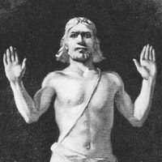
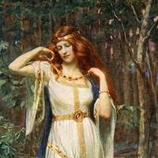
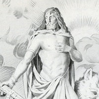
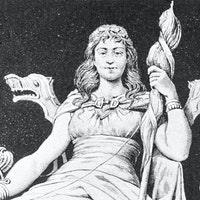
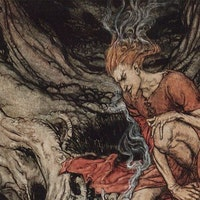
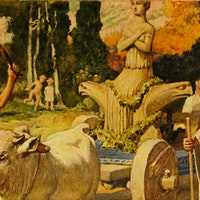
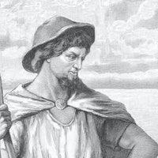
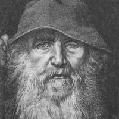

MITHOPÉDIA
MITHOPÉDIA Az északi mitológia az ősi északi népek történeteinek, vallási szokásainak és mítoszainak gyűjteménye. Ezek a szövegek az északi pogányságtól kezdve a középkorig terjedő időszakot ölelik fel, amely során Skandinávia nagy része áttért a kereszténységre.
Norvég Panteon
Baldur "Ragyogó" északi isten, aki szépségéről, bölcsességéről és igazságosságáról ismert. |
 | |
| Freya Az áldás, a szerelem és a termékenység gyönyörű és csábító északi istennője. |
 | |
Freyr A béke és a jólét északi istene, a férfiassággal és a jó idővel kapcsolatos. |
 | |
| Frigg Az anyaság és termékenység északi istennője, az Aesir istenségek királynője. |
 | |
Heimdall Őrző északi isten, aki Asgardot védte az ellenséges inváziótól. |
||
Idun Az ifjúság és termékenység északi istennője, akinek varázslatos almái megfiatalították az isteneket. |
||
Loki Sarki szélhámos isten, akinek cselszövései és csalásai káoszt okoztak. |
 | |
Nerthus Titokzatos északi istennő, akit a béke és a jólét hozójaként ismernek. |
 | |
Njord A szél és a vizek északi istene, a Vanir istenségek törzsének pátriárkája. |
 | |
Odin A "Mindenatya", az északi istenek vezetője és az Aesir uralkodója. |
 | |
Thor A mennydörgés északi istene és a Mjölnir mágikus kalapácsának kezelője. |
||
Tyr Félkarú északi hadisten, aki a rend és az igazságosság védelmezője volt. |
||